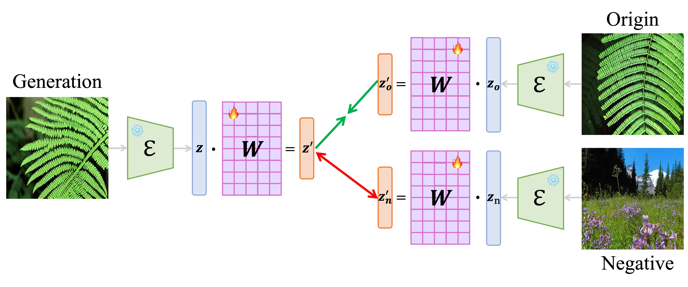

Modern AI tools can now rewrite any picture just by following a short text instruction—turning a daytime street into a rainy night scene, or adding new objects that never existed. While fun and useful, this power makes it easy to spread fake images, dodge copyright rules, and hide the true source of a picture. We tackle this problem by asking a simple but crucial question: given an edited image, can we reliably find the original photo it came from?
Abstract
Text-guided image-to-image diffusion models excel in translating images based on textual prompts, allowing for precise and creative visual modifications. However, such a powerful technique can be misused for spreading misinformation, infringing on copyrights, and evading content tracing. This motivates us to introduce the task of origin IDentification for text-guided Image-to-image Diffusion models (ID2), aiming to retrieve the original image of a given translated query. A straightforward solution to ID2 involves training a specialized deep embedding model to extract and compare features from both query and reference images. However, due to visual discrepancy across generations produced by different diffusion models, this similarity-based approach fails when training on images from one model and testing on those from another, limiting its effectiveness in real-world applications. To solve this challenge of the proposed ID2 task, we contribute the first dataset and a theoretically guaranteed method, both emphasizing generalizability. The curated dataset, OriPID, contains abundant Origins and guided Prompts, which can be used to train and test potential IDentification models across various diffusion models. In the method section, we first prove the existence of a linear transformation that minimizes the distance between the pre-trained Variational Autoencoder embeddings of generated samples and their origins. Subsequently, it is demonstrated that such a simple linear transformation can be generalized across different diffusion models. Experimental results show that the proposed method achieves satisfying generalization performance, significantly surpassing similarity-based methods (+31.6 % mAP), even those with generalization designs.
Visual Discrepancy

OriPID Dataset

Prompts

Method
Matching

Paper
Origin Identification for Text-Guided Image-to-Image Diffusion Models
Wenhao Wang, Yifan Sun, Zongxin Yang, Zhentao Tan, Zhengdong Hu, and Yi Yang
ICML, 2025.
@article{wang2025origin,
title={Origin Identification for Text-Guided Image-to-Image Diffusion Models},
author={Wang, Wenhao and Sun, Yifan and Yang, Zongxin and Tan, Zhentao and Hu, Zhengdong and Yang, Yi},
journal={Forty-second International Conference on Machine Learning},
year={2025},
url={https://openreview.net/forum?id=46n3izUNiv}
}Contact
If you have any questions, feel free to contact Wenhao Wang (wangwenhao0716@gmail.com).
Acknowledgements
This template was originally made by Phillip Isola and Richard Zhang for a colorful project, and inherits the modifications made by Jason Zhang and Shangzhe Wu. The code can be found here.